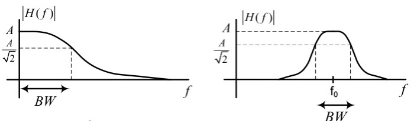
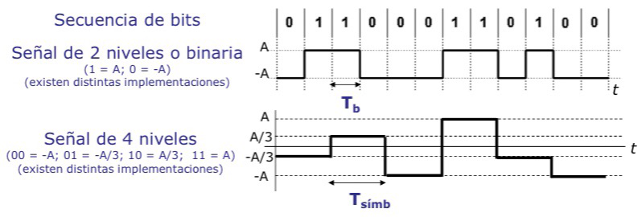

Señales e información
Todo sistema de telecomunicación existe para intercambiar información entre dos puntos. Este capítulo recorre cómo esa información se representa mediante una señal, cómo se caracteriza esa señal en los dominios analógico y digital, cómo se convierte de uno a otro dominio y cómo se comparan dos señales entre sí mediante herramientas de correlación.
Introducción¶
La información que dos extremos de una comunicación quieren intercambiar puede ser de naturaleza muy distinta: voz, una fotografía, música o cualquier otro contenido perceptible. Esa información puede presentarse en forma analógica o en forma digital, y en ambos casos se transporta mediante una señal, que es la magnitud física que se transforma para poder manipular, transmitir y recuperar la información que representa. Caracterizar correctamente una señal, tanto en su dominio nativo como tras su conversión al dominio opuesto, es el primer paso para diseñar cualquier sistema de comunicaciones.
Información, señales y sistemas de telecomunicación¶
Naturaleza de la señal¶
Una señal puede clasificarse según su naturaleza física, es decir, según la magnitud que varía para representar la información y el medio por el que se propaga.
| Naturaleza de la señal | Medio de propagación habitual |
|---|---|
| Eléctrica | Conductor metálico, por ejemplo un cable de pares o coaxial |
| Radioeléctrica | Aire, mediante ondas electromagnéticas |
| Óptica | Fibra óptica, mediante luz |
Además de por su naturaleza física, una señal se clasifica según cómo se comporta su amplitud. Si la amplitud puede tomar cualquier valor dentro de un rango continuo, la señal es continua en amplitud, y también se dice que no está cuantificada. Si, por el contrario, la amplitud solo puede tomar un conjunto finito de valores, la señal es discreta en amplitud, o cuantificada. Esta distinción resulta clave más adelante, cuando se describe el proceso de cuantificación dentro de la conversión analógico-digital.
Comparación de medios de transmisión guiados¶
Dentro de la naturaleza eléctrica y óptica de la tabla anterior, tres medios guiados concentran la práctica totalidad de los enlaces cableados: el cable de pares, el cable coaxial y la fibra óptica. Los tres transportan la señal confinada dentro de una estructura física continua entre transmisor y receptor, a diferencia del medio radio, no confinado, que se trata en detalle en propagación y pérdidas. Se diferencian, sin embargo, en el ancho de banda que admiten, en cómo crece su atenuación con la distancia, en su inmunidad frente a interferencias electromagnéticas externas y, como consecuencia de ambos factores, en el alcance que pueden cubrir sin regeneración de la señal.
| Medio | Ancho de banda típico | Atenuación con la distancia | Inmunidad a interferencias | Alcance típico sin regeneración |
|---|---|---|---|---|
| Cable de pares | Decenas de Mbit/s | Elevada, crece con rapidez con la distancia | Baja, susceptible a diafonía y a campos electromagnéticos externos | Del orden de kilómetros |
| Cable coaxial | Centenares de Mbit/s | Moderada, menor que la del par trenzado a igual distancia | Moderada, el conductor externo actúa de apantallado | Del orden de decenas de kilómetros |
| Fibra óptica | Decenas de Gbit/s o más | Muy baja, crece de forma lenta con la distancia | Muy alta, no conduce corriente ni capta campos electromagnéticos | Del orden de centenares de kilómetros entre regeneradores |
El cable de pares es el medio más económico y sencillo de instalar, pero su capacidad y su alcance son los más limitados de los tres, y su naturaleza eléctrica no apantallada lo expone a la diafonía entre pares adyacentes y a la interferencia de campos externos. El cable coaxial mejora la inmunidad frente a interferencias gracias a su conductor externo, que actúa como apantallado del conductor central, y admite un ancho de banda sustancialmente mayor, lo que explica su uso histórico en redes de área local y en distribución de televisión por cable. La fibra óptica transporta la señal como luz en lugar de como corriente eléctrica, por lo que no se ve afectada por ninguna interferencia electromagnética, presenta una atenuación muy inferior a la de los dos medios eléctricos y admite el mayor ancho de banda de los tres, a costa de un coste de despliegue y de terminación superior.
Señales de tiempo continuo y de tiempo discreto¶
El tiempo es la otra variable fundamental en la caracterización de una señal. Si la señal puede tomar un valor en cualquier instante de tiempo, se trata de una señal de tiempo continuo. Si, en cambio, la señal solo está definida en un conjunto discreto de instantes, separados entre sí por un intervalo regular, se trata de una señal de tiempo discreto. Una señal analógica es, por tanto, continua tanto en tiempo como en amplitud, mientras que una señal digital resulta de discretizar ambas variables a partir de una señal de partida.
Modelo de un sistema de telecomunicación¶
Un sistema de telecomunicación es el conjunto mínimo de elementos necesario para enviar información entre dos puntos distantes. Se compone de una fuente, que genera la información, un procesado en transmisión, que adapta la señal a las características del canal por el que va a viajar, el propio canal, que es el medio de transmisión, un procesado en recepción, que deshace las modificaciones introducidas por el canal y facilita la recuperación de la información, y un destino, que consume la información recibida.
El conjunto formado por el procesado en transmisión, el canal y el procesado en recepción constituye el enlace. El procesado en transmisión persigue minimizar los efectos negativos que el canal introduce sobre la señal, y esos efectos son fundamentalmente tres. El retardo es el tiempo que la señal tarda en recorrer el canal. La distorsión es el cambio en la forma de la señal a medida que se propaga. El ruido son las señales no deseadas que se suman a la señal de información durante su recorrido. Sobre el canal actúa también la atenuación, que reduce la energía de la señal a medida que aumenta la distancia recorrida.
Caracterización de señales analógicas¶
Cuando la señal es analógica, la información se extrae de la forma de onda de la propia señal, por lo que resulta necesario caracterizarla con un conjunto reducido de magnitudes.
Amplitud, frecuencia, periodo y fase¶
Una señal analógica se caracteriza mediante su amplitud, \(A\), su frecuencia, \(f\), su periodo, \(T\), y su fase, \(\varphi\). Para un tono sinusoidal, estas magnitudes aparecen en la expresión
donde \(A\) es la amplitud máxima que alcanza la señal, \(f\) es el número de ciclos que completa la señal por segundo, y \(\varphi\) es el desfase de la señal respecto a un origen de tiempo de referencia. El periodo, \(T\), es el tiempo que dura un ciclo completo, y se relaciona con la frecuencia mediante \(f = 1/T\).
Ancho de banda¶
El ancho de banda de una señal, \(B_s\), es el intervalo de frecuencias donde se concentra la mayor parte de la potencia de la señal. Una señal cuyo espectro está centrado en el origen de frecuencias se denomina señal en banda base, mientras que una señal cuyo espectro está centrado alrededor de una frecuencia portadora se denomina señal en banda de paso.
Para delimitar de forma precisa el ancho de banda de un sistema o de un filtro se recurre habitualmente al criterio de caída del 70 % de la amplitud máxima, equivalente a una caída de 3 dB, que marca la frecuencia de corte del sistema. La figura siguiente muestra este criterio aplicado a un sistema paso bajo, en el que el ancho de banda se mide desde el origen hasta la frecuencia de corte, y a un sistema paso banda, en el que el ancho de banda se mide alrededor de una frecuencia central \(f_0\).

Caracterización de señales digitales¶
Una señal digital se caracteriza con magnitudes propias, distintas de las de una señal analógica, porque su información no reside en la forma de onda continua sino en una secuencia de símbolos discretos.
Bit, símbolo y tiempo de símbolo¶
El bit, \(b\), es la unidad mínima de información. Un byte, \(B\), agrupa 8 bits. Un símbolo es una agrupación de \(n\) bits que se transmite conjuntamente. El tiempo de bit, \(T_b\), es la duración de cada bit, y el tiempo de símbolo, \(T_{\text{simb}}\), es la duración de cada símbolo, que se relaciona con el tiempo de bit mediante
donde \(n\) es el número de bits que agrupa cada símbolo.
Régimen binario y señales multinivel¶
El régimen binario, \(R\), es el número de bits que la señal transporta por segundo, y se expresa en bits por segundo (bit/s). Para una señal de dos niveles, en la que cada símbolo coincide con un bit, el régimen binario se calcula como
Una señal multinivel permite representar más de un bit por símbolo. Si la señal utiliza \(M\) niveles de amplitud distintos, cada símbolo agrupa \(n = \log_2 M\) bits, y el régimen binario se obtiene a partir del régimen de símbolo, \(R_{\text{simb}} = 1/T_{\text{simb}}\), mediante
La figura siguiente compara una señal binaria, en la que cada bit se representa con dos niveles de amplitud, con una señal de cuatro niveles, en la que cada símbolo agrupa dos bits y se representa con cuatro niveles de amplitud distintos.

Conversión analógico-digital¶
La mayor parte de la información de origen es analógica por naturaleza, por lo que resulta necesario un proceso que la convierta en una secuencia de bits antes de poder tratarla con las técnicas propias de las señales digitales.
Muestreo, cuantificación y codificación¶
La conversión de una señal analógica a una señal digital sigue una cadena de pasos: a partir de la señal analógica de entrada, un bloque de muestreo la convierte en una secuencia de muestras discretas en el tiempo, un cuantificador asigna a cada muestra uno de un número finito de niveles de amplitud y, por último, un codificador traduce cada nivel cuantificado en una secuencia de bits.
El muestreo toma el valor de la señal analógica a intervalos regulares de tiempo, con una frecuencia de muestreo suficientemente alta para que la secuencia de muestras conserve la información relevante de la señal original. La cuantificación sustituye cada muestra, que en principio puede tomar cualquier valor dentro de un rango continuo, por el nivel discreto más próximo de entre un conjunto finito de niveles disponibles. El siguiente cuantificador uniforme ilustra este paso, asignando cada muestra al nivel más cercano dentro del rango dinámico de la señal.
Finalmente, la codificación asigna a cada nivel cuantificado una palabra de bits distinta, de modo que la salida del conjunto es ya una secuencia binaria lista para su transmisión o su procesado posterior.
Ventajas e inconvenientes de la señal digital¶
Frente a la señal analógica equivalente, la señal digital ofrece varias ventajas. No se degrada con la misma facilidad durante la transmisión, porque un receptor solo necesita distinguir entre un número finito de niveles y no reconstruir una forma de onda continua. Admite técnicas de compresión que reducen el volumen de información a transmitir. Permite aplicar técnicas de encriptación para proteger la información. Y sostiene transmisiones a mayores distancias sin pérdida de calidad, porque la señal puede regenerarse en puntos intermedios en lugar de simplemente amplificarse.
Como contrapartida, la conversión analógico-digital introduce una complejidad adicional en los extremos de la comunicación, que necesitan los bloques de muestreo, cuantificación, codificación y sus inversos. La cuantificación, además, introduce un error irreversible respecto a la señal analógica original, ya que sustituye cada muestra por el nivel discreto más próximo. Por último, una señal digital puede necesitar más ancho de banda que la señal analógica de la que procede, en particular cuando se opta por un número de niveles de cuantificación elevado para reducir ese error.
Señales de imagen y de vídeo¶
Las imágenes fijas y las secuencias de vídeo son un caso particular de información susceptible de digitalizarse siguiendo la misma cadena de muestreo, cuantificación y codificación, aplicada esta vez sobre una rejilla espacial de puntos en lugar de sobre una señal temporal.
Resolución y profundidad de color¶
La resolución de una imagen fija se expresa como el número de píxeles en su dimensión vertical por el número de píxeles en su dimensión horizontal. La variedad de color que puede representar cada píxel depende del número de bits por píxel, \(\text{bpp}\), que se le asignan: con \(\text{bpp}\) bits por píxel es posible representar \(2^{\text{bpp}}\) colores distintos. Para una imagen en color con tres componentes, roja, verde y azul, el número de bits por píxel resulta de multiplicar por tres el número de bits que se dedican a cada componente por separado.
Régimen binario de una secuencia de vídeo¶
Una secuencia de vídeo añade a la imagen fija una tercera dimensión, el tiempo, caracterizada por el número de fotogramas por segundo, \(\text{fps}\). El régimen binario que exige transmitir una secuencia de vídeo sin comprimir se obtiene multiplicando el número de fotogramas por segundo por la resolución de cada fotograma y por el número de bits por píxel:
Por ejemplo, una secuencia con una resolución de 1920 por 1080 píxeles, una profundidad de color de 24 bits por píxel, repartidos en 8 bits por cada componente roja, verde y azul, y una tasa de 30 fotogramas por segundo exige un régimen binario sin comprimir de aproximadamente \(1920 \cdot 1080 \cdot 24 \cdot 30 \approx 1{,}49\) Gbit/s, lo que justifica la importancia de las técnicas de compresión de vídeo en cualquier sistema que transporte este tipo de contenido.
Energía y potencia de una señal¶
Además de caracterizarse por sus magnitudes en tiempo y en frecuencia, una señal se clasifica según si su energía o su potencia son magnitudes finitas y distintas de cero, lo que determina qué herramientas matemáticas resultan adecuadas para describirla.
Promedio temporal¶
El promedio temporal de una señal continua en el tiempo se define, de forma general, como el límite del promedio de la señal sobre una ventana de observación que crece sin límite. Para una señal periódica, ese promedio coincide con el promedio calculado sobre un único periodo. El operador de promedio temporal es lineal, de modo que el promedio de la suma de dos señales es igual a la suma de sus promedios individuales:
Una propiedad particular de este operador, que resulta útil más adelante al estudiar la modulación, es que el promedio temporal de un tono puro es siempre nulo: \(\langle \cos(\omega_0 t) \rangle = 0\).
A partir del promedio temporal se definen la energía y la potencia de una señal. Para una señal continua en el tiempo, la energía se calcula como
y la potencia, como el promedio temporal del cuadrado de la señal,
Si la energía de una señal es finita, la señal se denomina señal de energía, y su potencia, calculada sobre todo el eje temporal, resulta nula. Si, por el contrario, la potencia de la señal es finita y distinta de cero, la señal se denomina señal de potencia, y su energía, calculada sobre todo el eje temporal, resulta infinita. Las señales periódicas son siempre señales de potencia. Un tono de amplitud \(A\), de la forma \(x(t) = A\cos(\omega_0 t)\), es un ejemplo habitual de señal de potencia, con \(P_x = A^2/2\).
Las señales discretas en el tiempo admiten definiciones análogas, sustituyendo la integral por una suma sobre el índice de las muestras:
Densidad espectral y teorema de Parseval¶
La densidad espectral describe cómo se distribuye la energía o la potencia de una señal a lo largo del eje de frecuencias. Para una señal determinista de energía, \(x(t)\), la densidad espectral de energía, \(S_x(f)\), se obtiene a partir de su transformada de Fourier, \(X(f)\), como \(S_x(f) = |X(f)|^2\). El teorema de Parseval establece que la energía calculada en el dominio del tiempo coincide con la energía calculada en el dominio de la frecuencia:
lo que permite calcular qué fracción de la energía total de una señal cae dentro de un intervalo de frecuencias concreto, \(\lbrack f_1, f_2 \rbrack\), integrando la densidad espectral únicamente sobre ese intervalo.
Cuando la señal atraviesa un sistema lineal e invariante en el tiempo con respuesta en frecuencia \(H(f)\), la densidad espectral a la salida del sistema se relaciona con la densidad espectral a la entrada mediante \(S_y(f) = S_x(f) \cdot |H(f)|^2\), relación que también explica el desplazamiento espectral que produce una modulación por tono portador. La demostración de ambos resultados y su generalización a procesos aleatorios se desarrollan en señales aleatorias y ruido.
Relación entre señales¶
Comparar dos señales entre sí, o una señal con una versión desplazada de ella misma, resulta esencial para separar señales que comparten un mismo medio de transmisión y para detectar la presencia de una señal conocida dentro de una señal recibida.
Correlación y autocorrelación¶
La correlación entre dos señales, \(x(t)\) e \(y(t)\), mide su grado de parecido y se define como el promedio temporal de su producto desplazado en el tiempo:
El grado de parecido entre dos señales sin desplazamiento relativo, es decir, \(R_{x,y}(0)\), se relaciona con la diferencia entre ambas señales. En efecto, desarrollando el promedio temporal del cuadrado de la diferencia se obtiene
de modo que cuanto mayor es \(R_{x,y}(0)\), menor es la diferencia media entre ambas señales, y cuanto más próximo a cero es \(R_{x,y}(0)\), menos parecidas resultan. Cuando \(R_{x,y}(0)\) es nulo, las señales se denominan ortogonales: no guardan ningún parecido entre sí. Dos tonos de frecuencias distintas resultan ortogonales con independencia de su fase relativa, mientras que dos tonos de la misma frecuencia solo son ortogonales cuando su diferencia de fase es de 90 grados.
La autocorrelación es el caso particular de correlación de una señal consigo misma, desplazada en el tiempo:
y mide el grado de parecido de una señal con una versión retardada de ella misma, lo que resulta útil para detectar periodicidades o para sincronizar un receptor con la señal recibida.
Ortogonalidad y suma de señales¶
Cuando dos señales se transmiten sobre el mismo medio, lo que se recibe es su suma, \(z(t) = x(t) + y(t)\). La potencia de la señal suma se obtiene desarrollando el cuadrado de la suma y aplicando la linealidad del promedio temporal:
Si las dos señales son ortogonales, el término cruzado se anula y la potencia de la suma es sencillamente la suma de las potencias individuales, \(P_z = P_x + P_y\), con la densidad espectral de la suma igual a la suma de las densidades espectrales individuales, \(S_z(f) = S_x(f) + S_y(f)\). Esta propiedad de las señales ortogonales, que permite combinarlas sin que unas interfieran sobre las otras y separarlas después mediante correlación, es la base sobre la que se apoyan las técnicas que permiten que varias señales comparen un mismo medio de transmisión.
Este capítulo ha tratado la señal como una magnitud determinista, conocida en cada instante. En un sistema de comunicación real hay que contar además con un componente que no lo es: el ruido introducido por el canal y por el propio receptor. El siguiente capítulo, señales aleatorias y ruido, extiende estas mismas herramientas de caracterización espectral y de correlación al caso de procesos aleatorios y presenta el modelo de ruido que se usa en el resto de la wiki.